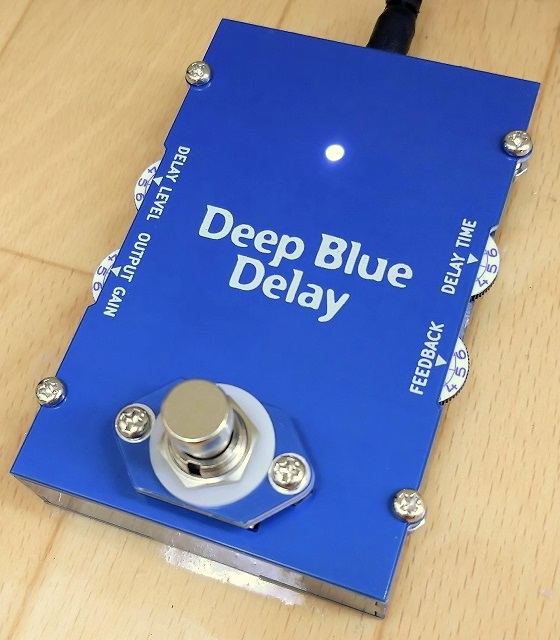
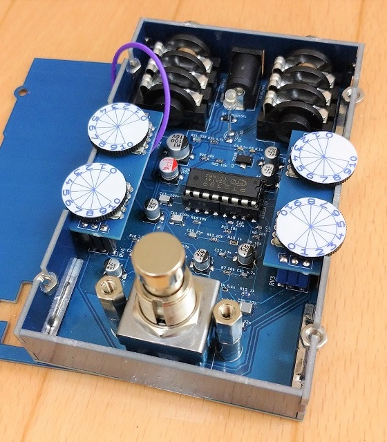
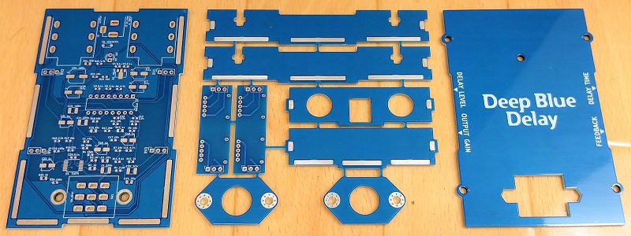
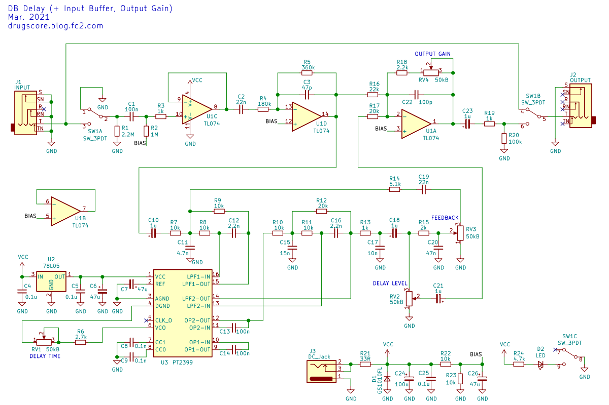

MAD PROFESSOR Deep Blue Delay 基板筐体
2021年07月25日 カテゴリー：自作エフェクター（アナログ）

側面から操作する薄型ボリュームを使ったDeep Blue Delayを製作しました。当然ながら操作はやりにくいので、ボリュームにシールを貼って設定値がわかりやすいようにしました。表面にノブがないので、シンプルでなかなか面白い見た目です。
スライドボリューム仕様のRATの時と同様、筐体が基板で構成されており、側面と底面ははんだ付けで接合しています。上面はネジ止め式のため、別途アース線を繋ぐ必要があります。

※上写真では薄型ボリューム取付基板の配線パターンが間違っています（GitHubのデータは修正済）。
▽回路図（KiCadデータはGitHubへ）

入力部がオペアンプの反転入力なのは気分的に嫌なので、入力バッファを追加しました。また、デザイン上もう一つポットを増やすため、出力ゲインコントロールを追加しました。他は基本的に元の回路のままで、クワッドオペアンプの余った1回路はあえて使用していません。
薄型ボリュームは2連の方が入手しやすいようで、AliExpressで購入しました。本来は直流での使用不可で、耐久性に不安があります。このポットを今後また使うことはないんじゃないかなと思います（笑）